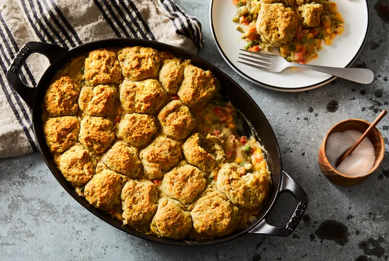

Vegan Pot Pie with Herby Biscuits

A delicious vegan version of a classic cozy dish, the pot pie. Flaky and
buttery biscuits over a creamy vegetable stew.
Vegan Pot Pie
- 3 tablespoons vegan butter, plus more for greasing the pan
-
4 ½ cups frozen mixed vegetables (peas, carrots, corn, and green
beans)
- 1 medium red onion, chopped finely
- ¼ cups plus 2 tablespoons all-purpose flour
- Sea salt and black pepper, to taste
- 2 tablespoons white wine
- 1 cup vegetable stock
- ¾ cups unsweetened almond milk (or any non-dairy milk)
- 3 tablespoons nutritional yeast
Vegan Herby Biscuits
- 2 cups all-purpose flour
- 1 tablespoon baking powder
- ½ teaspoons baking soda
- 1 teaspoon sea salt
- 2 tablespoons dried parsley
- ½ teaspoon dried thyme
- ½ teaspoon dried oregano
- 1 teaspoon garlic powder
- ½ cups vegan butter, cold and cubed
- 1 cup unsweetened almond milk (or any non-dairy milk)
- 1 tablespoon apple cider vinegar
Directions
- Heat oven to 400°F and grease a medium (8x10-inch) baking dish.
-
Add the butter to a medium pot on medium-high heat. Once butter melts,
add the mixed vegetables and onion. Season with salt and pepper to
taste. Cook, stirring occasionally, until the vegetables have softened,
5 to 6 minutes.
-
Sprinkle the flour on top and stir until incorporated. Cook for 1 minute
or so, to remove the raw flour taste. While whisking, slowly pour in the
wine, stock, and milk. Increase the heat to high, to bring the mixture
to a boil for 3 to 4 minutes, stirring frequently. Reduce to a simmer
and cook until the sauce thickens, 5 to 6 minutes, stirring frequently.
Mix in the nutritional yeast.
-
Start on the biscuits: Whisk together the flour, baking powder, baking
soda, and salt in a medium bowl. Add the parsley, thyme, oregano, and
garlic powder, and whisk again.
-
Add the cubed butter. Using a pastry cutter or fork, cut the butter into
the flour mixture until it forms pea-sized clumps.
-
Slowly add the milk and vinegar while gently stirring. Mix until the
dough almost forms a blob and holds together when squeezed. Don’t
over-mix!
-
Pour the pot pie filling into the prepared baking dish. Grab about 2
tablespoons of biscuit dough with your hands, gently roll into an
imperfect, semi-round shape, and place atop the pot pie filling. Repeat
with the remaining biscuit dough, evenly distributing.
-
Brush the biscuits with melted butter. Bake for 18 to 20 minutes, until
the biscuits are golden brown and baked through, and the filling is
bubbly.
Back to top